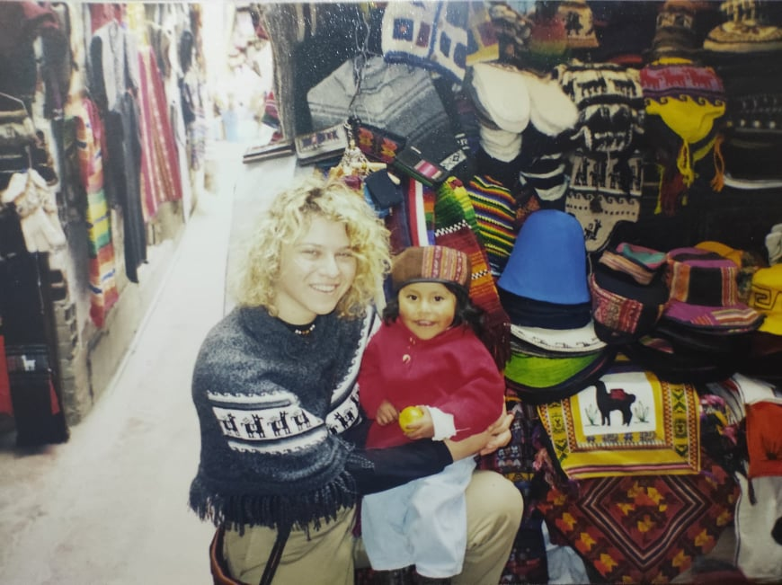
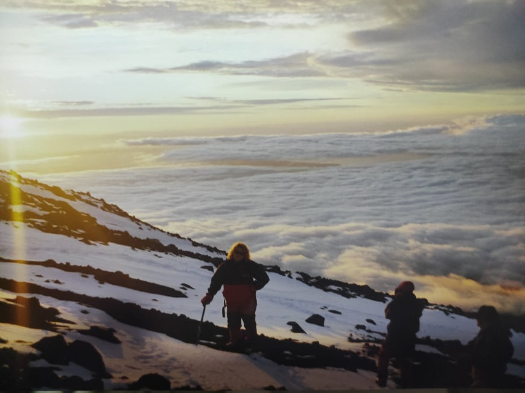
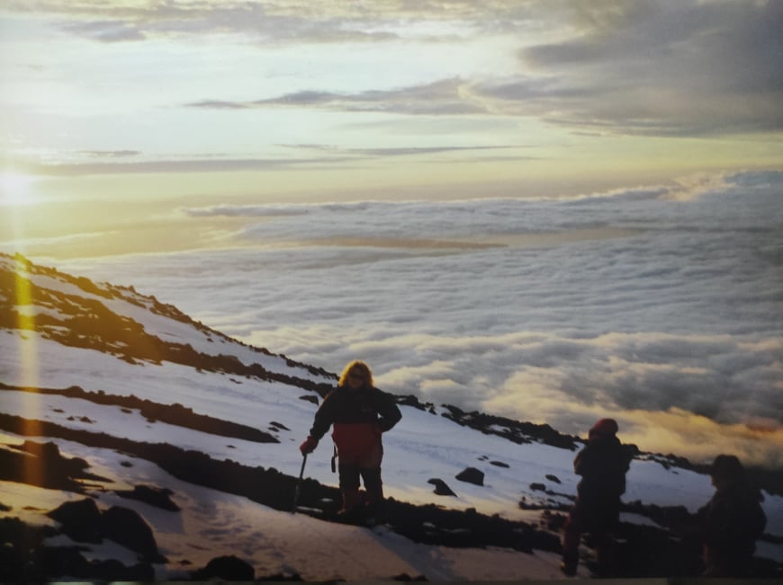

South america

 

India
Australia
Sinai

1999-2002: Shabak (Israeli Security Agency)
I did my military service and some citizenship work for "the service". The research-based role included analysis of information and its processing. The work was characterized as teamwork under pressure, quick decision-making, coordination and linking with various factors, as well as providing guidance to new employees.
2004-2007: Content & Television
After finishing my B.A in Communication & Management, I took a part in production and mostly content in the television world. Roles in the different companies: production for "RESHET", research in the kids channel for "NOGA TIKSHORET", research in an health show for "ANANEY TIKSHORET", research in "Hakasefet" for "KESHET".
2008-2013: Acting
During those years I experienced the hard and interEsting life of an actress... I've participated in the kids theatre "ATID BAHIR" and did small parts in shows like "RAMZOR", "SRUGIM" and "SHTISEL". As much as i loved the art of drama, i needed to feel more contribution to the world, so-
2016-2022 : Drama Therapy & Playback Theatre
After finishing my M.A in drama therapy in which I've experienced work with different populations, i've started to treat and facilitate private sessions and group meetings of drama and playback theatre. Some of this work is therapeutic oriented and some is more educational (kids, youth, special education and elders). Among the institutes where I have gained my experience: Reich Center, Neve Tzedek Hostel, Hakfar Hayarok, Beit Frankfurt. In addition, I'm currently a part of some playback theatre groups which do commercial and volunteer performances.
2021: "Tal's Secret"
Writing my book! "Tal's Secret" is an illustrated children's book that encourages a parent-child discourse regarding secrets. For more info you can visit my self-made landing page: "הסוד של טל".
2021-... : High-tech World
After getting qualification (HTML, CSS, Notepad++, SQL, JIRA etz) I'm pursuing my goal of transferring to the high-tech world with my analytical skills, people skills, noticing details and fast learning. My first experience was in a project for "Hour One" company. Hour One is a vide transformation company which replace cameras with codes, for the next generation of video for the world of work. I entered as a Q.A person, a role I loved and hope to pursue.
2022: Professional and practical QA course in "The Automation College" (https://automation.co.il/).
2017-2019: Psychotherapy studies in group playback, "The Israeli Institute of Psychotherapy in Playback Theater".
2016-2013: M.A degree in Drama Therapy, "Academic College of Society and the Arts".
2013: Completion courses in psychology, "Kibbutzim Seminar" - Introduction, Developmental, Pathology, Physiology.
2012: Screenwriting Studies, "Exposure" - School of Communication and Digital.
2010-2007: Acting Studies at the "Studio for the Theater Arts" by Yoram Levinstein, multiple theatre and camera workshops at "Haderech" and "Technica" School, A master class by "Chebek method".
2002-2005: B.A degree in Communication and Management, "College of Management", specialization in popular media and persuasive seniority.
1993-1999: High School, "Ticon Hadash" high School, Literature and Art.